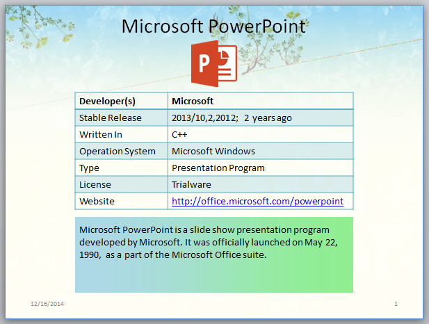

This sample project demonstrates how to create a PowerPoint slide using free PowerPoint API with C#. Before coding, I have referenced Spire.Presentation dll to my assemblies.
Tools we need:
- Free Spire.Presentation(This dll is available in the package attached.)
- Visual Studio
Main purposes I want to achieve:
Screenshot of Effect:

Free Spire.Presentation for .NET is a Community Edition of the Spire.Presentation for .NET, which is a totally free PowerPoint component for commercial and personal use. As a standalone C#/VB.NET component, developers can use Free Spire.Presentation for .NET to create, read, write, modify, convert and Print PowerPoint documents from any .NET(C#, VB.NET, ASP.NET) platform.
Free Spire.Presentation for .NET is a standalone PowerPoint .NET library and does not depend on Microsoft PowerPoint. It supports both PowerPoint Presentation 97-2003(PPT) and PowerPoint Presentation 2007, 2010(PPTX).
Related Links:
Website: http://www.e-iceblue.com/
Download:
Download Spire.Presentation
Forum: Spire.Presentation Forum